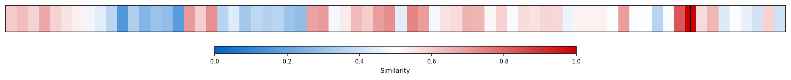

Description
This subcluster examines tax policy mechanisms affecting high-income individuals and their actual tax burden contributions. Articles analyze effective tax rates, inheritance levies, international tax structures, and policy reforms like the Tax Cuts and Jobs Act. Common sources include tax policy researchers, think tank analyses, wealth surveys from UBS and similar institutions, and academic studies quantifying billionaire and top-400 earner tax payments. The focus centers on policy instruments and their implementation rather than static wealth measurement. Unlike sibling subclusters tracking wealth concentration trends over time, these articles evaluate the fiscal policy tools designed to capture revenue from high earners and debate their effectiveness, fairness, and economic impacts.
Similarity to All 70 Subclusters
Each cell represents a subcluster. Color intensity shows similarity (blue=low, red=high). Black line marks current subcluster position.
Relationship to Primary Clusters
Average similarity to each of the 15 primary clusters. Larger area = stronger relationship to that cluster.

Taxonomy Landscape
All 70 subclusters positioned by similarity (t-SNE). Current subcluster highlighted with label. Click to enlarge.

Network Connections
Current subcluster at center, connected to related subclusters. Line thickness = similarity strength.

Most Representative Articles
-
1. The US tax system resembles a flat tax, with most groups paying rates near 28%. Top 400 Americans fa
-
2. Taxes on the rich were not much higher in the 1950s. Despite top tax rates ranging from 91% to 70%,
-
3. US income tax policy has become mostly about the 1%. In 2019, the top 0.1% paid a smaller share of t
-
4. A 70% tax rate on income over $10m may seem to generate significant revenue, but accounting for beha
-
5. Top Tax Rates And taxes Actually Collected As A Percentage of Income For Top 1%, Top 10%, And Bottom
Edge Cases (Boundary Articles)
-
1. UBS projects that the US will add approximately 3mm millionaires between 2023 and 2028. Henley &This article is borderline because while it mentions millionaires (high earners), it focuses on population movements and emigration patterns rather than examining actual tax policies, tax rates, or tax burden contributions that affect these wealthy individuals. The content aligns more closely with demographic and migration trends than with the cluster's emphasis on tax policy mechanisms and their implementation.
-
2. Elizabeth Warren proposes removing limited liability protections from private equity firms, holdingThis article is borderline because while it involves wealthy private equity firms and could indirectly affect their tax burdens, it primarily focuses on corporate liability and regulatory reform rather than specific tax policy mechanisms or rates affecting high earners. The proposal is more about changing legal protections and accountability structures than implementing tax measures, making it more aligned with industrial/regulatory policy than tax policy.
-
3. Swiss voters overwhelmingly rejected a proposed 50% inheritance levy on estates above ~$62mm. 43% ofThis article is borderline because while it does involve tax policy affecting high earners (inheritance levy on large estates), it focuses on a specific referendum outcome rather than analyzing the broader tax policy mechanisms, effective rates, or actual contribution patterns that characterize the cluster. The article is more about democratic rejection of a tax proposal than about the systematic examination of how high earners are taxed or their contribution levels.
Original Dendrogram